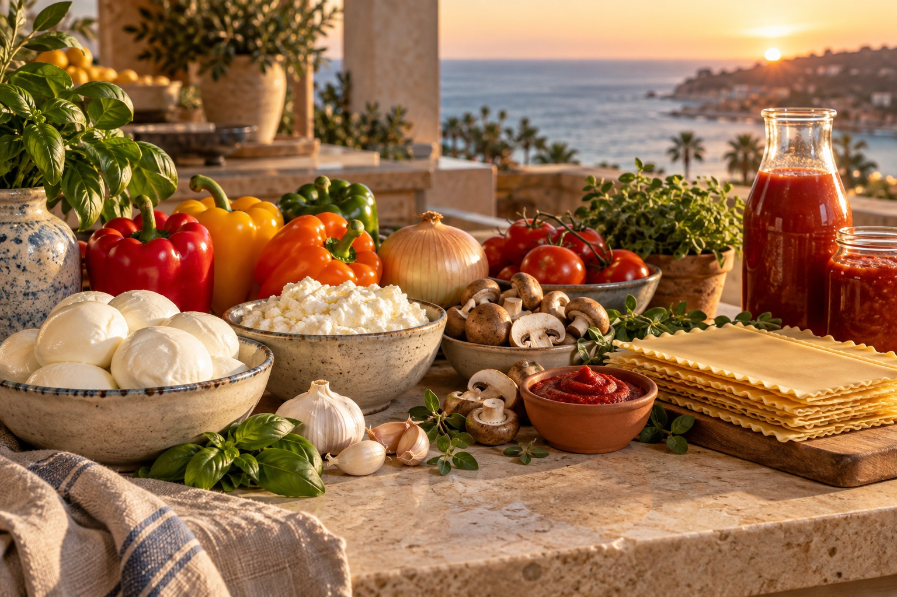

Kiki’s ingredients, with a suggested home-chef method. Preparation and timings are proposed and have not been tested for this combination.
The ingredients

Original AI ingredient illustration
A family meal with substantial leftovers. Set out two deep 9 × 13-inch pans and a spare small dish; final capacity depends on the actual package volumes.
*One pepper of each color is an interpretation, pending confirmation. “I package” is read as 1 package. Can, jar and pasta-package sizes were not supplied; seasoning amounts are to taste.
The preparation
- 01
Prepare the kitchen
Drain and blot thinly sliced or torn fresh mozzarella. Drain pooled whey from the ricotta. Set out two deep 9 × 13-inch pans plus a spare small dish; this is a capacity estimate, depending on the actual package volumes.
- 02
Build a generous sauce
Brown the ground beef or Impossible in batches to 160°F, then remove. Cook the mushrooms until excess water evaporates. Soften diced onion and peppers, add minced garlic briefly, then cook the tomato paste for 1–2 minutes. Return the protein and vegetables. Add all tomatoes with their juices, both jars of sauce, the ketchup and oregano. Simmer gently for 20–30 minutes, retaining a generous, pourable sauce. Add some basil toward the end. Season cautiously with salt, black pepper and garlic salt.
- 03
Layer with care
Mix the ricotta with some chopped basil and black pepper. Spread sauce across the bottom of each pan. Add a single layer of dry, uncooked noodles with minimal overlap. Cover all noodle edges generously with sauce, then add ricotta and mozzarella. Repeat the layers. Leave ½–1 inch of headroom and reserve some mozzarella for the finish. Divide all ingredients between the pans and spare dish as needed.
- 04
Bake until tender
Follow the exact noodle maker’s no-boil guidance, including any added water. Cover tightly with foil and place on rimmed trays. Bake at 350°F for an estimated 60–90 minutes, checking from 60 minutes. The pasta must be tender throughout and the center reach 165°F. If noodles remain firm or dry, add a modest amount of hot water and reseal. Package directions take precedence over this estimated timing.
- 05
Finish, rest, share
Uncover, add the reserved mozzarella and bake for an estimated 10–20 minutes until browned. Rest for 20–30 minutes before cutting. Serve a family of four with substantial leftovers; the full batch is not four portions.
- 06
Keep the leftovers
Refrigerate in shallow portions within 2 hours. Keep refrigerated for 3–4 days and reheat to 165°F.
A note on dry noodles
Ordinary dry lasagne and oven-ready sheets are not interchangeable. Use your exact pasta maker’s no-boil guidance. Package, can and jar sizes were not supplied, so no universal added-water amount is given. The pepper count is interpreted as one of each color, pending confirmation. Seasoning quantities are to taste.

Guidance: Mueller’s no-boil lasagna · Barilla no-boil guidance · USDA food safety · Impossible cooking guidance · BelGioioso fresh mozzarella lasagna. These sources inform the proposed method; they do not test this ingredient combination.